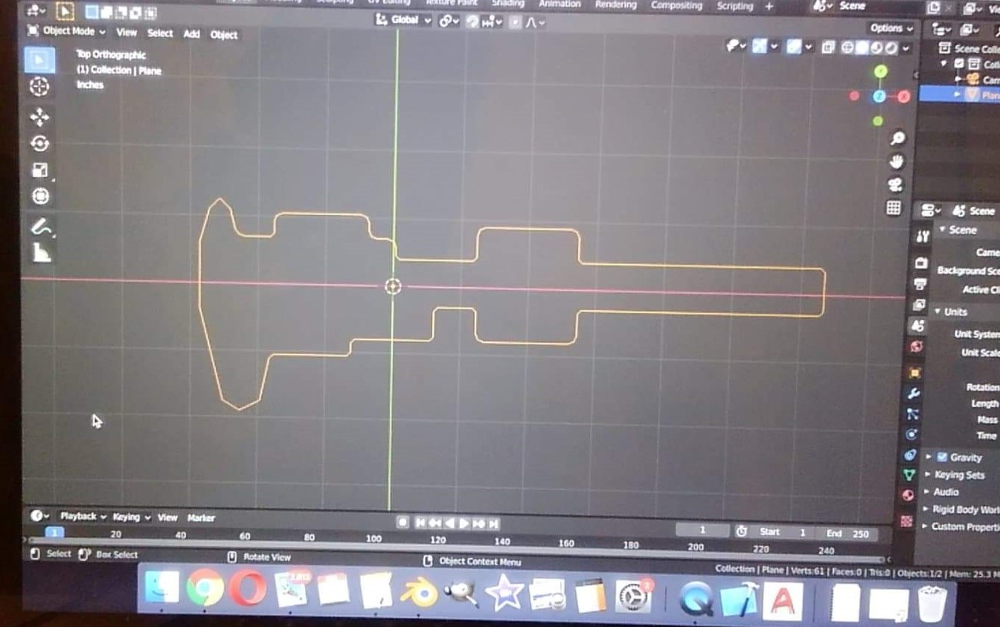
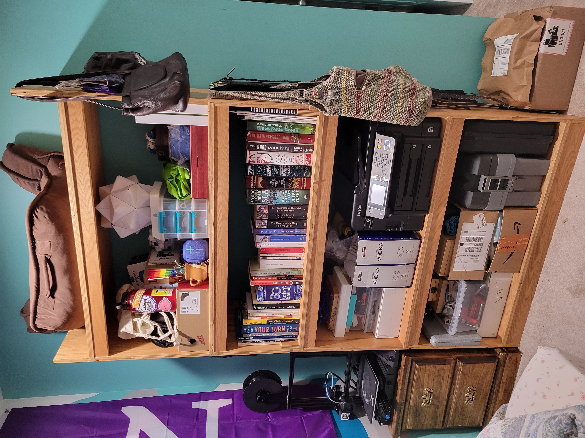

I’ve always loved making things out of wood. Whether it’s sitting around and whittling on camping trips or making handmade presents, there’s something sublimely meditative and infinitely exciting about the art of woodworking.
-
Woodworking Projects

An assortment of small woodworking projects
-
Calipers Boxes
(Fall 2019)One day in the shop, my calipers box fell on the ground and shattered! I decided a replacement pine box would be a fun project.
I liked the first so much, when I got nicer pair of calipers, I made a nicer box, too. I even laser cut the foam for a polished, professional touch.
- 
The calipers boxes (Left and TR) and laser cutter toolpath (BR)
-
Tea Box
(Summer 2020)I made this tea box as a gift. It’s made from scrap oak trim and panel from a past home renovation.
The tea box
-
Oak Shelf
(Spring 2021)I built this shelf to organize my things. It's solid, and I think, quite stylish, too.
The shelf